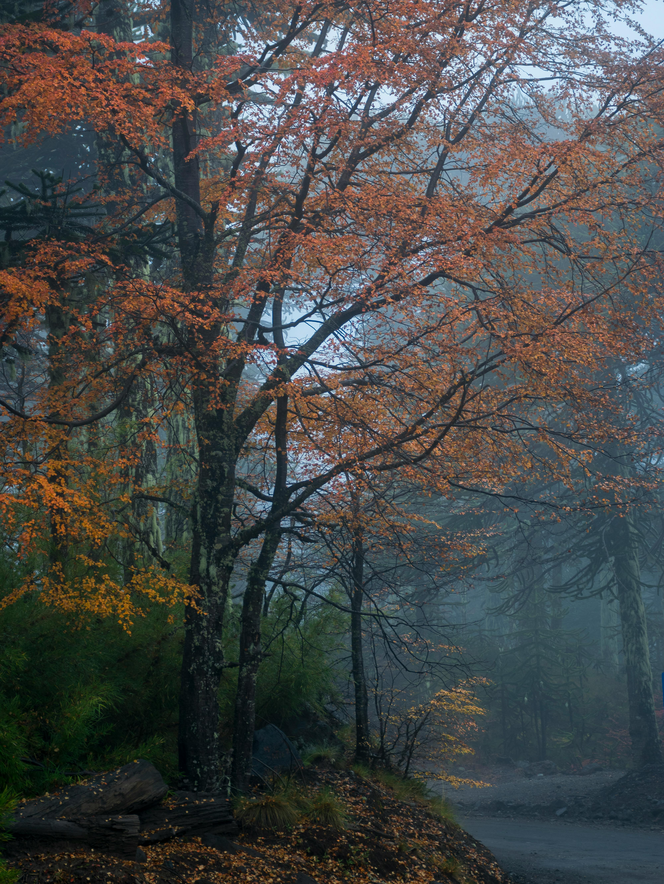
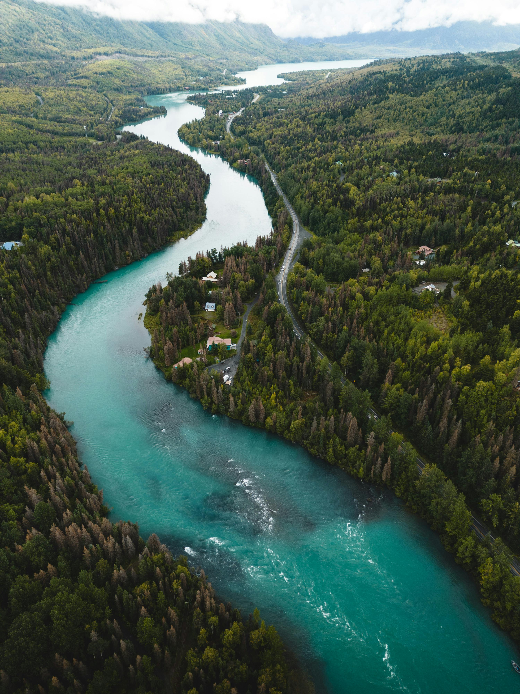
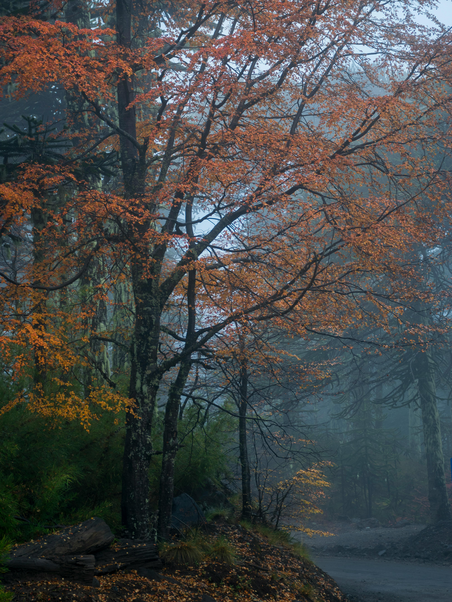
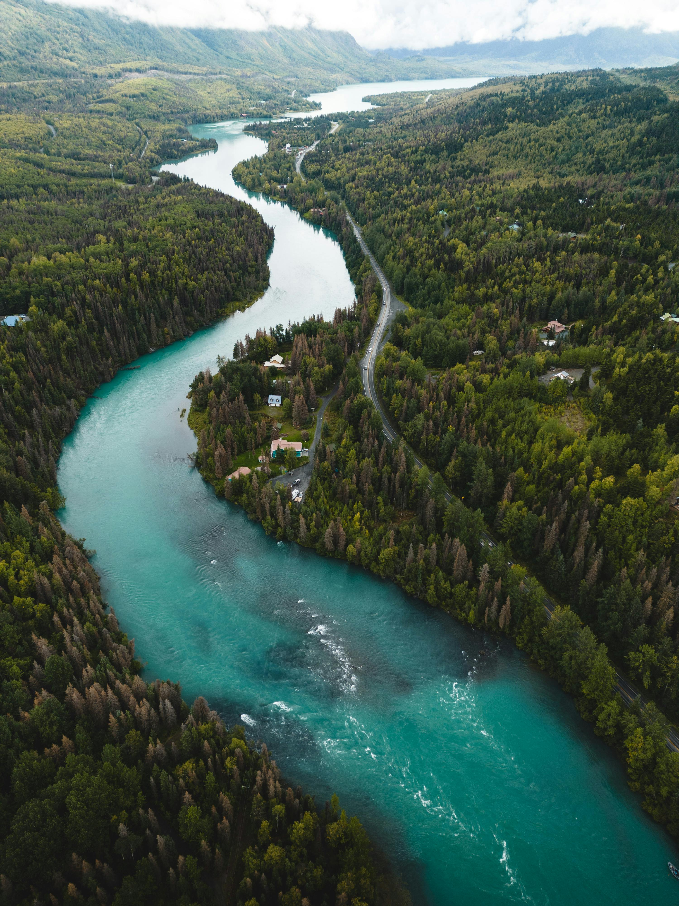

Tropical rainforest - a hot, humid biome that experiences year-round rain and features three distinct layers of vegetation
Canopy (top layer): tall trees that block sunlight from reaching the ground
Understory (middle layer): smaller trees, ferns, and palms
Forest floor (bottom layer): decomposing leaves and microorganisms that break down and recycle plant material
Temperate rainforest - a biome characterized by:
A mix of broad-leaved and coniferous trees
Abundant moisture year-round
Mild temperatures
Several forms of percipitation, including heavy rain and coastal fog
Temperate deciduous forest - a biome that experiences four distinct seasons that vary in temperature:
Cold winters in which trees experience a dormancy period
Mild springs in which trees grow and flower
Hot, wet summers
Boreal forest (aka Taiga) - a cold biome found between tundra and temperate forests. Few plants can grow in the taiga because of its frozen, nutrient-poor soil, but boreal forests typically feature:

 


